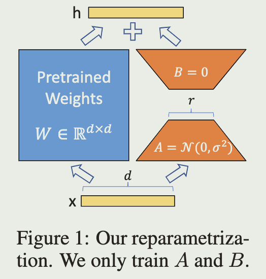

LoRA: Low-Rank Adaptation of Large Language Models
2024-4-12
intro
Here are some flaws of existing techniques:
- Adapter Tuning: introduce inference latency by extending model depth
- Prefix Tuning: reduce the model's usable sequence length
We take inspiration from previous work (hypo):
- the learned over-parametrized models in fact reside on a low intrinsic dimension
propose Low-Rank Adaptation (LoRA) approach
Approach
we use low-rank matric to replace the pre-trained weights, specially:
- add new matrices AB next to the pre-trained weights which looks like the ResNet
- frozen the pre-trained weights, use AB as the trained parameters
- modify forward pass as
- pre-trained weights: \(W_0\in \mathbb R^{d\times k}\)
- input: \(x\)
- \(B\in \mathbb R^{d\times r}\), \(A\in \mathbb R^{r \times k}\), rank \(r\ll min(d,k)\)
- use \(W=W_0+BA\) as weights when inference
- when switch to another downstream task, recover \(W_0\) by subtracting BA and adding new B'A'
\[ h=W_0x+BAx \]
while:
We use a random Gaussian initialization for A and zero for B, so ∆W = BA is zero at the beginning of training